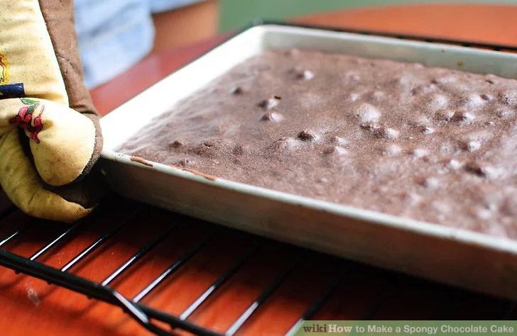

How to Make a Spongy Chocolate Cake
Ingredients
- 1 cup (240 ml) of milk
- 2 cups (250g) of all purpose flour
- 3/4 cup (90g) powdered sugar
- 1 1/2 teaspoons of baking powder
- 1/2 cup (43g) of cocoa
- 1 teaspoon of salt
- 1 teaspoon of baking soda
- 2 eggs
- 2 teaspoons of vanilla extract
- 1/2 cup (118 ml) vegetable oil
Procedure
- oven to 350ºF or 180ºC.
- Grease and flour a 9" x 13" (23 x 33 cm) cake pan.
- Stir together sugar, flour, cocoa, baking powder, baking soda and salt in a large bowl. You should sieve the flour and other ingredients into the bowl as it allows more air to go into the mixture making it more spongy.
- Add eggs, milk, vegetable oil and vanilla. Beat with an electric mixer on medium speed for 2 minutes or by hand.
- Pour into prepared pan. With a spatula distribute batter evenly in the pan.
- Bake for 35 to 40 minutes.
- Cool completely and frost with your favorite frosting.